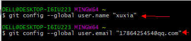

Git
- 下载git之后默认安装之后，打开Git Bash，输入下列命令：

- 选择一个自己喜欢的路径，建git库：

在learngit文件夹下，输入如下命令：

此时会在learngit下多出一个文件夹.git, 这是一个隐藏的文件夹，ls命令显示不出来，可以输入ls –ah:

如果想在文件夹下看到，执行以下操作：

- 使用notepad++写一个readme.txt文件（不要使用记事本），内容如下：
Git is a version control system.
Git is free software.
- 使用如下两条命令将readme.txt添加到git库中：

- 再次修改readme.txt内容为如下：
Git is a distributed version control system.
Git is free software distributed under the GPL.
然后执行步骤4：

- 最后为readme.txt添加一条信息：
Git is a distributed version control system.
Git is free software distributed under the GPL.
Git is pretty good.

- 使用git log,查看修改的过程（由近及远显示）：

使用git log –pretty=oneline,可以显示为一行，便于查看

- HEAD表示当前版本，HEAD^表示上一个版本，HEAD^^表示上上个版本，HEAD~100表示上100个版本，使用git reset –hard HEAD^可以回退到上一个版本：此时再打开readme.txt,发现文件内容已经变为上一个版本了。

也可以使用cat 命令查看

- 回退之后再查看修改过程，发现最新的版本不见了，那么如何恢复呢

使用一下命令可以恢复，不过要有需要恢复的版本的id：
这个就是id，不需要全部输入，输入前几位能够分辨版本号即可

恢复命令如下：

然后再查看修改日志，已经恢复了：

- Git中，总有后悔药可以吃，当不知道需要恢复的commit 的id时，怎么办？Git的git reflog用来记录你的每一次命令：

从这里可以知道id
- 工作区，比如：

- 版本库，.git

- Git的版本库里存了很多东西，其中最重要的就是称为stage（或者叫index）的暂存区，还有Git为我们自动创建的第一个分支master，以及指向master的一个指针叫HEAD。

分支和HEAD的概念我们以后再讲。
前面讲了我们把文件往Git版本库里添加的时候，是分两步执行的：
第一步是用git add把文件添加进去，实际上就是把文件修改添加到暂存区；
第二步是用git commit提交更改，实际上就是把暂存区的所有内容提交到当前分支。
因为我们创建Git版本库时，Git自动为我们创建了唯一一个master分支，所以，现在，git commit就是往master分支上提交更改。
你可以简单理解为，需要提交的文件修改通通放到暂存区，然后，一次性提交暂存区的所有修改。
俗话说，实践出真知。现在，我们再练习一遍，先对readme.txt做个修改，比如加上一行内容：
Git is a distributed version control system.
Git is free software distributed under the GPL.
Git has a mutable index called stage.
然后，在工作区新增一个LICENSE文本文件（内容随便写）。
先用git status查看一下状态：
$ git status
# On branch master
# Changes not staged for commit:
# (use "git add <file>..." to update what will be committed)
# (use "git checkout -- <file>..." to discard changes in working directory)
#
# modified: readme.txt
#
# Untracked files:
# (use "git add <file>..." to include in what will be committed)
#
# LICENSE
no changes added to commit (use "git add" and/or "git commit -a")
Git非常清楚地告诉我们，readme.txt被修改了，而LICENSE还从来没有被添加过，所以它的状态是Untracked。
现在，使用两次命令git add，把readme.txt和LICENSE都添加后，用git status再查看一下：
$ git status
# On branch master
# Changes to be committed:
# (use "git reset HEAD <file>..." to unstage)
#
# new file: LICENSE
# modified: readme.txt
#
现在，暂存区的状态就变成这样了：

所以，git add命令实际上就是把要提交的所有修改放到暂存区（Stage），然后，执行git commit就可以一次性把暂存区的所有修改提交到分支。
$ git commit -m "understand how stage works"
[master 27c9860] understand how stage works
2 files changed, 675 insertions(+)
create mode 100644 LICENSE
一旦提交后，如果你又没有对工作区做任何修改，那么工作区就是“干净”的：
$ git status
# On branch master
nothing to commit (working directory clean)
现在版本库变成了这样，暂存区就没有任何内容了：

- 管理修改
第一步，对readme.txt做一个修改，比如加一行内容：

然后，添加：

然后，再修改readme.txt：

提交：

提交后，再看看状态：

咦，怎么第二次的修改没有被提交？
别激动，我们回顾一下操作过程：
第一次修改 -> git add -> 第二次修改 -> git commit
你看，我们前面讲了，Git管理的是修改，当你用git add命令后，在工作区的第一次修改被放入暂存区，准备提交，但是，在工作区的第二次修改并没有放入暂存区，所以，git commit只负责把暂存区的修改提交了，也就是第一次的修改被提交了，第二次的修改不会被提交。
提交后，用git diff HEAD -- readme.txt命令可以查看工作区和版本库里面最新版本的区别：

可见，第二次修改确实没有被提交。
小结
现在，你又理解了Git是如何跟踪修改的，每次修改，如果不add到暂存区，那就不会加入到commit中。
- 撤销修改
你在readme.txt中添加了一行：

此时还没有git add,可是CTRL+S保存了，使用git status查看一下：

你可以发现，Git会告诉你，git checkout -- file可以丢弃工作区的修改：
撤销修改
阅读: 626741

自然，你是不会犯错的。不过现在是凌晨两点，你正在赶一份工作报告，你在readme.txt中添加了一行：
$ cat readme.txt
Git is a distributed version control system.
Git is free software distributed under the GPL.
Git has a mutable index called stage.
Git tracks changes of files.
My stupid boss still prefers SVN.
在你准备提交前，一杯咖啡起了作用，你猛然发现了“stupid boss”可能会让你丢掉这个月的奖金！
既然错误发现得很及时，就可以很容易地纠正它。你可以删掉最后一行，手动把文件恢复到上一个版本的状态。如果用git status查看一下：
$ git status
# On branch master
# Changes not staged for commit:
# (use "git add <file>..." to update what will be committed)
# (use "git checkout -- <file>..." to discard changes in working directory)
#
# modified: readme.txt
#
no changes added to commit (use "git add" and/or "git commit -a")
你可以发现，Git会告诉你，git checkout -- file可以丢弃工作区的修改：
$ git checkout -- readme.txt
命令git checkout -- readme.txt意思就是，把readme.txt文件在工作区的修改全部撤销，这里有两种情况：
一种是readme.txt自修改后还没有被放到暂存区，现在，撤销修改就回到和版本库一模一样的状态；
一种是readme.txt已经添加到暂存区后，又作了修改，现在，撤销修改就回到添加到暂存区后的状态。
总之，就是让这个文件回到最近一次git commit或git add时的状态。
现在，看看readme.txt的文件内容：

文件内容果然复原了。
git checkout -- file命令中的--很重要，没有--，就变成了“切换到另一个分支”的命令，我们在后面的分支管理中会再次遇到git checkout命令。
现在假定是凌晨3点，你不但写了一些胡话，还git add到暂存区了：

庆幸的是，在commit之前，你发现了这个问题。用git status查看一下，修改只是添加到了暂存区，还没有提交：

Git同样告诉我们，用命令git reset HEAD file可以把暂存区的修改撤销掉（unstage），重新放回工作区：

git reset命令既可以回退版本，也可以把暂存区的修改回退到工作区。当我们用HEAD时，表示最新的版本。
再用git status查看一下，现在暂存区是干净的，工作区有修改：

丢弃工作区的修改

小结
又到了小结时间。
场景1：当你改乱了工作区某个文件的内容，想直接丢弃工作区的修改时，用命令git checkout -- file。
场景2：当你不但改乱了工作区某个文件的内容，还添加到了暂存区时，想丢弃修改，分两步，第一步用命令git reset HEAD file，就回到了场景1，第二步按场景1操作。
- 删除文件
在Git中，删除也是一个修改操作，我们实战一下，先添加一个新文件test.txt到Git并且提交：
$ git add test.txt
$ git commit -m "add test.txt"
[master 94cdc44] add test.txt
1 file changed, 1 insertion(+)
create mode 100644 test.txt
一般情况下，你通常直接在文件管理器中把没用的文件删了，或者用rm命令删了：
$ rm test.txt
这个时候，Git知道你删除了文件，因此，工作区和版本库就不一致了，git status命令会立刻告诉你哪些文件被删除了：
$ git status
# On branch master
# Changes not staged for commit:
# (use "git add/rm <file>..." to update what will be committed)
# (use "git checkout -- <file>..." to discard changes in working directory)
#
# deleted: test.txt
#
no changes added to commit (use "git add" and/or "git commit -a")
现在你有两个选择，一是确实要从版本库中删除该文件，那就用命令git rm删掉，并且git commit：
$ git rm test.txt
rm 'test.txt'
$ git commit -m "remove test.txt"
[master d17efd8] remove test.txt
1 file changed, 1 deletion(-)
delete mode 100644 test.txt
现在，文件就从版本库中被删除了。
另一种情况是删错了，因为版本库里还有呢，所以可以很轻松地把误删的文件恢复到最新版本：
$ git checkout -- test.txt
git checkout其实是用版本库里的版本替换工作区的版本，无论工作区是修改还是删除，都可以“一键还原”。
小结
命令git rm用于删除一个文件。如果一个文件已经被提交到版本库，那么你永远不用担心误删，但是要小心，你只能恢复文件到最新版本，你会丢失最近一次提交后你修改的内容。
- 远程仓库
到目前为止，我们已经掌握了如何在Git仓库里对一个文件进行时光穿梭，你再也不用担心文件备份或者丢失的问题了。
可是有用过集中式版本控制系统SVN的童鞋会站出来说，这些功能在SVN里早就有了，没看出Git有什么特别的地方。
没错，如果只是在一个仓库里管理文件历史，Git和SVN真没啥区别。为了保证你现在所学的Git物超所值，将来绝对不会后悔，同时为了打击已经不幸学了SVN的童鞋，本章开始介绍Git的杀手级功能之一（注意是之一，也就是后面还有之二，之三……）：远程仓库。
Git是分布式版本控制系统，同一个Git仓库，可以分布到不同的机器上。怎么分布呢？最早，肯定只有一台机器有一个原始版本库，此后，别的机器可以“克隆”这个原始版本库，而且每台机器的版本库其实都是一样的，并没有主次之分。
你肯定会想，至少需要两台机器才能玩远程库不是？但是我只有一台电脑，怎么玩？
其实一台电脑上也是可以克隆多个版本库的，只要不在同一个目录下。不过，现实生活中是不会有人这么傻的在一台电脑上搞几个远程库玩，因为一台电脑上搞几个远程库完全没有意义，而且硬盘挂了会导致所有库都挂掉，所以我也不告诉你在一台电脑上怎么克隆多个仓库。
实际情况往往是这样，找一台电脑充当服务器的角色，每天24小时开机，其他每个人都从这个“服务器”仓库克隆一份到自己的电脑上，并且各自把各自的提交推送到服务器仓库里，也从服务器仓库中拉取别人的提交。
完全可以自己搭建一台运行Git的服务器，不过现阶段，为了学Git先搭个服务器绝对是小题大作。好在这个世界上有个叫GitHub的神奇的网站，从名字就可以看出，这个网站就是提供Git仓库托管服务的，所以，只要注册一个GitHub账号，就可以免费获得Git远程仓库。
在继续阅读后续内容前，请自行注册GitHub账号。由于你的本地Git仓库和GitHub仓库之间的传输是通过SSH加密的，所以，需要一点设置：
第1步：创建SSH Key。在用户主目录下，看看有没有.ssh目录，如果有，再看看这个目录下有没有id_rsa和id_rsa.pub这两个文件，如果已经有了，可直接跳到下一步。如果没有，打开Shell（Windows下打开Git Bash），创建SSH Key：
你需要把邮件地址换成你自己的邮件地址，然后一路回车，使用默认值即可，由于这个Key也不是用于军事目的，所以也无需设置密码。
如果一切顺利的话，可以在用户主目录里找到.ssh目录，里面有id_rsa和id_rsa.pub两个文件，这两个就是SSH Key的秘钥对，id_rsa是私钥，不能泄露出去，id_rsa.pub是公钥，可以放心地告诉任何人。
第2步：登陆GitHub，打开“Account settings”，“SSH Keys”页面：
然后，点“Add SSH Key”，填上任意Title，在Key文本框里粘贴id_rsa.pub文件的内容：

点“Add Key”，你就应该看到已经添加的Key：

为什么GitHub需要SSH Key呢？因为GitHub需要识别出你推送的提交确实是你推送的，而不是别人冒充的，而Git支持SSH协议，所以，GitHub只要知道了你的公钥，就可以确认只有你自己才能推送。
当然，GitHub允许你添加多个Key。假定你有若干电脑，你一会儿在公司提交，一会儿在家里提交，只要把每台电脑的Key都添加到GitHub，就可以在每台电脑上往GitHub推送了。
最后友情提示，在GitHub上免费托管的Git仓库，任何人都可以看到喔（但只有你自己才能改）。所以，不要把敏感信息放进去。
如果你不想让别人看到Git库，有两个办法，一个是交点保护费，让GitHub把公开的仓库变成私有的，这样别人就看不见了（不可读更不可写）。另一个办法是自己动手，搭一个Git服务器，因为是你自己的Git服务器，所以别人也是看不见的。这个方法我们后面会讲到的，相当简单，公司内部开发必备。
确保你拥有一个GitHub账号后，我们就即将开始远程仓库的学习。
小结
“有了远程仓库，妈妈再也不用担心我的硬盘了。”——Git点读机
- 添加远程库
现在的情景是，你已经在本地创建了一个Git仓库后，又想在GitHub创建一个Git仓库，并且让这两个仓库进行远程同步，这样，GitHub上的仓库既可以作为备份，又可以让其他人通过该仓库来协作，真是一举多得。
首先，登陆GitHub，然后，在右上角找到“Create a new repo”按钮，创建一个新的仓库：

在Repository name填入learngit，其他保持默认设置，点击“Create repository”按钮，就成功地创建了一个新的Git仓库：

目前，在GitHub上的这个learngit仓库还是空的，GitHub告诉我们，可以从这个仓库克隆出新的仓库，也可以把一个已有的本地仓库与之关联，然后，把本地仓库的内容推送到GitHub仓库。
现在，我们根据GitHub的提示，在本地的learngit仓库下运行命令：
请千万注意，把上面的michaelliao替换成你自己的GitHub账户名，否则，你在本地关联的就是我的远程库，关联没有问题，但是你以后推送是推不上去的，因为你的SSH Key公钥不在我的账户列表中。
添加后，远程库的名字就是origin，这是Git默认的叫法，也可以改成别的，但是origin这个名字一看就知道是远程库。
下一步，就可以把本地库的所有内容推送到远程库上：
$ git push -u origin master
Counting objects: 19, done.
Delta compression using up to 4 threads.
Compressing objects: 100% (19/19), done.
Writing objects: 100% (19/19), 13.73 KiB, done.
Total 23 (delta 6), reused 0 (delta 0)
* [new branch] master -> master
Branch master set up to track remote branch master from origin.
把本地库的内容推送到远程，用git push命令，实际上是把当前分支master推送到远程。
由于远程库是空的，我们第一次推送master分支时，加上了-u参数，Git不但会把本地的master分支内容推送的远程新的master分支，还会把本地的master分支和远程的master分支关联起来，在以后的推送或者拉取时就可以简化命令。
推送成功后，可以立刻在GitHub页面中看到远程库的内容已经和本地一模一样：

从现在起，只要本地作了提交，就可以通过命令：
$ git push origin master
把本地master分支的最新修改推送至GitHub，现在，你就拥有了真正的分布式版本库！
SSH警告
当你第一次使用Git的clone或者push命令连接GitHub时，会得到一个警告：
RSA key fingerprint is xx.xx.xx.xx.xx.
Are you sure you want to continue connecting (yes/no)?
这是因为Git使用SSH连接，而SSH连接在第一次验证GitHub服务器的Key时，需要你确认GitHub的Key的指纹信息是否真的来自GitHub的服务器，输入yes回车即可。
Git会输出一个警告，告诉你已经把GitHub的Key添加到本机的一个信任列表里了：
这个警告只会出现一次，后面的操作就不会有任何警告了。
小结
要关联一个远程库，使用命令git remote add origin git@server-name:path/repo-name.git；
关联后，使用命令git push -u origin master第一次推送master分支的所有内容；
此后，每次本地提交后，只要有必要，就可以使用命令git push origin master推送最新修改；
分布式版本系统的最大好处之一是在本地工作完全不需要考虑远程库的存在，也就是有没有联网都可以正常工作，而SVN在没有联网的时候是拒绝干活的！当有网络的时候，再把本地提交推送一下就完成了同步，真是太方便了！


由于前面除了点小问题，我的是origin1

- 从远程库克隆
上次我们讲了先有本地库，后有远程库的时候，如何关联远程库。
现在，假设我们从零开发，那么最好的方式是先创建远程库，然后，从远程库克隆。
首先，登陆GitHub，创建一个新的仓库，名字叫gitskills：

我们勾选Initialize this repository with a README，这样GitHub会自动为我们创建一个README.md文件。创建完毕后，可以看到README.md文件：

现在，远程库已经准备好了，下一步是用命令git clone克隆一个本地库：
$ git clone git@github.com:michaelliao/gitskills.git
Cloning into 'gitskills'...
remote: Counting objects: 3, done.
remote: Total 3 (delta 0), reused 0 (delta 0)
Receiving objects: 100% (3/3), done.
$ cd gitskills
$ ls
README.md
注意把Git库的地址换成你自己的，然后进入gitskills目录看看，已经有README.md文件了。
如果有多个人协作开发，那么每个人各自从远程克隆一份就可以了。
你也许还注意到，GitHub给出的地址不止一个，还可以用https://github.com/michaelliao/gitskills.git这样的地址。实际上，Git支持多种协议，默认的git://使用ssh，但也可以使用https等其他协议。
使用https除了速度慢以外，还有个最大的麻烦是每次推送都必须输入口令，但是在某些只开放http端口的公司内部就无法使用ssh协议而只能用https。
小结
要克隆一个仓库，首先必须知道仓库的地址，然后使用git clone命令克隆。
Git支持多种协议，包括https，但通过ssh支持的原生git协议速度最快。
- 分支管理
分支就是科幻电影里面的平行宇宙，当你正在电脑前努力学习Git的时候，另一个你正在另一个平行宇宙里努力学习SVN。
如果两个平行宇宙互不干扰，那对现在的你也没啥影响。不过，在某个时间点，两个平行宇宙合并了，结果，你既学会了Git又学会了SVN！

分支在实际中有什么用呢？假设你准备开发一个新功能，但是需要两周才能完成，第一周你写了50%的代码，如果立刻提交，由于代码还没写完，不完整的代码库会导致别人不能干活了。如果等代码全部写完再一次提交，又存在丢失每天进度的巨大风险。
现在有了分支，就不用怕了。你创建了一个属于你自己的分支，别人看不到，还继续在原来的分支上正常工作，而你在自己的分支上干活，想提交就提交，直到开发完毕后，再一次性合并到原来的分支上，这样，既安全，又不影响别人工作。
其他版本控制系统如SVN等都有分支管理，但是用过之后你会发现，这些版本控制系统创建和切换分支比蜗牛还慢，简直让人无法忍受，结果分支功能成了摆设，大家都不去用。
但Git的分支是与众不同的，无论创建、切换和删除分支，Git在1秒钟之内就能完成！无论你的版本库是1个文件还是1万个文件。
- 创建与合并分支
在版本回退里，你已经知道，每次提交，Git都把它们串成一条时间线，这条时间线就是一个分支。截止到目前，只有一条时间线，在Git里，这个分支叫主分支，即master分支。HEAD严格来说不是指向提交，而是指向master，master才是指向提交的，所以，HEAD指向的就是当前分支。
一开始的时候，master分支是一条线，Git用master指向最新的提交，再用HEAD指向master，就能确定当前分支，以及当前分支的提交点：

每次提交，master分支都会向前移动一步，这样，随着你不断提交，master分支的线也越来越长：
当我们创建新的分支，例如dev时，Git新建了一个指针叫dev，指向master相同的提交，再把HEAD指向dev，就表示当前分支在dev上：

你看，Git创建一个分支很快，因为除了增加一个dev指针，改改HEAD的指向，工作区的文件都没有任何变化！
不过，从现在开始，对工作区的修改和提交就是针对dev分支了，比如新提交一次后，dev指针往前移动一步，而master指针不变：

假如我们在dev上的工作完成了，就可以把dev合并到master上。Git怎么合并呢？最简单的方法，就是直接把master指向dev的当前提交，就完成了合并：

所以Git合并分支也很快！就改改指针，工作区内容也不变！
合并完分支后，甚至可以删除dev分支。删除dev分支就是把dev指针给删掉，删掉后，我们就剩下了一条master分支：

真是太神奇了，你看得出来有些提交是通过分支完成的吗？
下面开始实战。
首先，我们创建dev分支，然后切换到dev分支：

git checkout命令加上-b参数表示创建并切换，相当于以下两条命令：
$ git branch dev
$ git checkout dev
Switched to branch 'dev'
然后，用git branch命令查看当前分支：

git branch命令会列出所有分支，当前分支前面会标一个*号。
然后，我们就可以在dev分支上正常提交，比如对readme.txt做个修改，加上一行：
Creating a new branch is quick.
然后提交：
$ git add readme.txt
$ git commit -m "branch test"
[dev fec145a] branch test
1 file changed, 1 insertion(+)
现在，dev分支的工作完成，我们就可以切换回master分支：
$ git checkout master
Switched to branch 'master'
切换回master分支后，再查看一个readme.txt文件，刚才添加的内容不见了！因为那个提交是在dev分支上，而master分支此刻的提交点并没有变：

现在，我们把dev分支的工作成果合并到master分支上：
$ git merge dev
Updating d17efd8..fec145a
Fast-forward
readme.txt | 1 +
1 file changed, 1 insertion(+)
git merge命令用于合并指定分支到当前分支。合并后，再查看readme.txt的内容，就可以看到，和dev分支的最新提交是完全一样的。
注意到上面的Fast-forward信息，Git告诉我们，这次合并是“快进模式”，也就是直接把master指向dev的当前提交，所以合并速度非常快。
当然，也不是每次合并都能Fast-forward，我们后面会讲其他方式的合并。
合并完成后，就可以放心地删除dev分支了：
$ git branch -d dev
Deleted branch dev (was fec145a).
删除后，查看branch，就只剩下master分支了：
$ git branch
* master
因为创建、合并和删除分支非常快，所以Git鼓励你使用分支完成某个任务，合并后再删掉分支，这和直接在master分支上工作效果是一样的，但过程更安全。
小结
Git鼓励大量使用分支：
查看分支：git branch
创建分支：git branch <name>
切换分支：git checkout <name>
创建+切换分支：git checkout -b <name>
合并某分支到当前分支：git merge <name>
删除分支：git branch -d <name>
- 解决冲突
人生不如意之事十之八九，合并分支往往也不是一帆风顺的。
准备新的feature1分支，继续我们的新分支开发：
$ git checkout -b feature1
Switched to a new branch 'feature1'
修改readme.txt最后一行，改为：
Creating a new branch is quick AND simple.
在feature1分支上提交：
$ git add readme.txt
$ git commit -m "AND simple"
[feature1 75a857c] AND simple
1 file changed, 1 insertion(+), 1 deletion(-)
切换到master分支：
$ git checkout master
Switched to branch 'master'
Your branch is ahead of 'origin/master' by 1 commit.
Git还会自动提示我们当前master分支比远程的master分支要超前1个提交。
在master分支上把readme.txt文件的最后一行改为：
Creating a new branch is quick & simple.
提交：
$ git add readme.txt
$ git commit -m "& simple"
[master 400b400] & simple
1 file changed, 1 insertion(+), 1 deletion(-)
现在，master分支和feature1分支各自都分别有新的提交，变成了这样：

这种情况下，Git无法执行“快速合并”，只能试图把各自的修改合并起来，但这种合并就可能会有冲突，我们试试看：
$ git merge feature1
Auto-merging readme.txt
CONFLICT (content): Merge conflict in readme.txt
Automatic merge failed; fix conflicts and then commit the result.
果然冲突了！Git告诉我们，readme.txt文件存在冲突，必须手动解决冲突后再提交。git status也可以告诉我们冲突的文件：
$ git status
# On branch master
# Your branch is ahead of 'origin/master' by 2 commits.
#
# Unmerged paths:
# (use "git add/rm <file>..." as appropriate to mark resolution)
#
# both modified: readme.txt
#
no changes added to commit (use "git add" and/or "git commit -a")
我们可以直接查看readme.txt的内容：
Git is a distributed version control system.
Git is free software distributed under the GPL.
Git has a mutable index called stage.
Git tracks changes of files.
<<<<<<< HEAD
Creating a new branch is quick & simple.
=======
Creating a new branch is quick AND simple.
>>>>>>> feature1
Git用<<<<<<<，=======，>>>>>>>标记出不同分支的内容，我们修改如下后保存：
Creating a new branch is quick and simple.
再提交：
$ git add readme.txt
$ git commit -m "conflict fixed"
[master 59bc1cb] conflict fixed
现在，master分支和feature1分支变成了下图所示：

用带参数的git log也可以看到分支的合并情况：
$ git log --graph --pretty=oneline --abbrev-commit
* 59bc1cb conflict fixed
|\
| * 75a857c AND simple
* | 400b400 & simple
|/
* fec145a branch test
...

最后，删除feature1分支：
$ git branch -d feature1
Deleted branch feature1 (was 75a857c).
工作完成。
小结
当Git无法自动合并分支时，就必须首先解决冲突。解决冲突后，再提交，合并完成。
用git log --graph命令可以看到分支合并图。
- 分支管理策略
通常，合并分支时，如果可能，Git会用Fast forward模式，但这种模式下，删除分支后，会丢掉分支信息。
如果要强制禁用Fast forward模式，Git就会在merge时生成一个新的commit，这样，从分支历史上就可以看出分支信息。
下面我们实战一下--no-ff方式的git merge：
首先，仍然创建并切换dev分支：
$ git checkout -b dev
Switched to a new branch 'dev'
修改readme.txt文件，并提交一个新的commit：
$ git add readme.txt
$ git commit -m "add merge"
[dev 6224937] add merge
1 file changed, 1 insertion(+)
现在，我们切换回master：
$ git checkout master
Switched to branch 'master'
准备合并dev分支，请注意--no-ff参数，表示禁用Fast forward：
$ git merge --no-ff -m "merge with no-ff" dev
Merge made by the 'recursive' strategy.
readme.txt | 1 +
1 file changed, 1 insertion(+)
因为本次合并要创建一个新的commit，所以加上-m参数，把commit描述写进去。
合并后，我们用git log看看分支历史：
$ git log --graph --pretty=oneline --abbrev-commit
* 7825a50 merge with no-ff
|\
| * 6224937 add merge
|/
* 59bc1cb conflict fixed
...
可以看到，不使用Fast forward模式，merge后就像这样：

分支策略
在实际开发中，我们应该按照几个基本原则进行分支管理：
首先，master分支应该是非常稳定的，也就是仅用来发布新版本，平时不能在上面干活；
那在哪干活呢？干活都在dev分支上，也就是说，dev分支是不稳定的，到某个时候，比如1.0版本发布时，再把dev分支合并到master上，在master分支发布1.0版本；
你和你的小伙伴们每个人都在dev分支上干活，每个人都有自己的分支，时不时地往dev分支上合并就可以了。
所以，团队合作的分支看起来就像这样：

小结
Git分支十分强大，在团队开发中应该充分应用。
合并分支时，加上--no-ff参数就可以用普通模式合并，合并后的历史有分支，能看出来曾经做过合并，而fast forward合并就看不出来曾经做过合并。
- Bug分支
软件开发中，bug就像家常便饭一样。有了bug就需要修复，在Git中，由于分支是如此的强大，所以，每个bug都可以通过一个新的临时分支来修复，修复后，合并分支，然后将临时分支删除。
当你接到一个修复一个代号101的bug的任务时，很自然地，你想创建一个分支issue-101来修复它，但是，等等，当前正在dev上进行的工作还没有提交：
$ git status
# On branch dev
# Changes to be committed:
# (use "git reset HEAD <file>..." to unstage)
#
# new file: hello.py
#
# Changes not staged for commit:
# (use "git add <file>..." to update what will be committed)
# (use "git checkout -- <file>..." to discard changes in working directory)
#
# modified: readme.txt
#
并不是你不想提交，而是工作只进行到一半，还没法提交，预计完成还需1天时间。但是，必须在两个小时内修复该bug，怎么办？
幸好，Git还提供了一个stash功能，可以把当前工作现场“储藏”起来，等以后恢复现场后继续工作：
$ git stash
Saved working directory and index state WIP on dev: 6224937 add merge
HEAD is now at 6224937 add merge
现在，用git status查看工作区，就是干净的（除非有没有被Git管理的文件），因此可以放心地创建分支来修复bug。
首先确定要在哪个分支上修复bug，假定需要在master分支上修复，就从master创建临时分支：
$ git checkout master
Switched to branch 'master'
Your branch is ahead of 'origin/master' by 6 commits.
$ git checkout -b issue-101
Switched to a new branch 'issue-101'
现在修复bug，需要把“Git is free software ...”改为“Git is a free software ...”，然后提交：
$ git add readme.txt
$ git commit -m "fix bug 101"
[issue-101 cc17032] fix bug 101
1 file changed, 1 insertion(+), 1 deletion(-)
修复完成后，切换到master分支，并完成合并，最后删除issue-101分支：
$ git checkout master
Switched to branch 'master'
Your branch is ahead of 'origin/master' by 2 commits.
$ git merge --no-ff -m "merged bug fix 101" issue-101
Merge made by the 'recursive' strategy.
readme.txt | 2 +-
1 file changed, 1 insertion(+), 1 deletion(-)
$ git branch -d issue-101
Deleted branch issue-101 (was cc17032).
太棒了，原计划两个小时的bug修复只花了5分钟！现在，是时候接着回到dev分支干活了！
$ git checkout dev
Switched to branch 'dev'
$ git status
# On branch dev
nothing to commit (working directory clean)
工作区是干净的，刚才的工作现场存到哪去了？用git stash list命令看看：
$ git stash list
stash@{0}: WIP on dev: 6224937 add merge
工作现场还在，Git把stash内容存在某个地方了，但是需要恢复一下，有两个办法：
一是用git stash apply恢复，但是恢复后，stash内容并不删除，你需要用git stash drop来删除；
另一种方式是用git stash pop，恢复的同时把stash内容也删了：
$ git stash pop
# On branch dev
# Changes to be committed:
# (use "git reset HEAD <file>..." to unstage)
#
# new file: hello.py
#
# Changes not staged for commit:
# (use "git add <file>..." to update what will be committed)
# (use "git checkout -- <file>..." to discard changes in working directory)
#
# modified: readme.txt
#
Dropped refs/stash@{0} (f624f8e5f082f2df2bed8a4e09c12fd2943bdd40)
再用git stash list查看，就看不到任何stash内容了：
$ git stash list
你可以多次stash，恢复的时候，先用git stash list查看，然后恢复指定的stash，用命令：
$ git stash apply stash@{0}
小结
修复bug时，我们会通过创建新的bug分支进行修复，然后合并，最后删除；
当手头工作没有完成时，先把工作现场git stash一下，然后去修复bug，修复后，再git stash pop，回到工作现场。
- Feature分支
软件开发中，总有无穷无尽的新的功能要不断添加进来。
添加一个新功能时，你肯定不希望因为一些实验性质的代码，把主分支搞乱了，所以，每添加一个新功能，最好新建一个feature分支，在上面开发，完成后，合并，最后，删除该feature分支。
现在，你终于接到了一个新任务：开发代号为Vulcan的新功能，该功能计划用于下一代星际飞船。
于是准备开发：
$ git checkout -b feature-vulcan
Switched to a new branch 'feature-vulcan'
5分钟后，开发完毕：
$ git add vulcan.py
$ git status
# On branch feature-vulcan
# Changes to be committed:
# (use "git reset HEAD <file>..." to unstage)
#
# new file: vulcan.py
#
$ git commit -m "add feature vulcan"
[feature-vulcan 756d4af] add feature vulcan
1 file changed, 2 insertions(+)
create mode 100644 vulcan.py
切回dev，准备合并：
$ git checkout dev
一切顺利的话，feature分支和bug分支是类似的，合并，然后删除。
但是，
就在此时，接到上级命令，因经费不足，新功能必须取消！
虽然白干了，但是这个分支还是必须就地销毁：
$ git branch -d feature-vulcan
error: The branch 'feature-vulcan' is not fully merged.
If you are sure you want to delete it, run 'git branch -D feature-vulcan'.
销毁失败。Git友情提醒，feature-vulcan分支还没有被合并，如果删除，将丢失掉修改，如果要强行删除，需要使用命令git branch -D feature-vulcan。
现在我们强行删除：
$ git branch -D feature-vulcan
Deleted branch feature-vulcan (was 756d4af).
终于删除成功！
小结
开发一个新feature，最好新建一个分支；
如果要丢弃一个没有被合并过的分支，可以通过git branch -D <name>强行删除。
- 多人协作
当你从远程仓库克隆时，实际上Git自动把本地的master分支和远程的master分支对应起来了，并且，远程仓库的默认名称是origin。
要查看远程库的信息，用git remote：
$ git remote
origin
或者，用git remote -v显示更详细的信息：
$ git remote -v
origin git@github.com:michaelliao/learngit.git (fetch)
origin git@github.com:michaelliao/learngit.git (push)
上面显示了可以抓取和推送的origin的地址。如果没有推送权限，就看不到push的地址。
推送分支
推送分支，就是把该分支上的所有本地提交推送到远程库。推送时，要指定本地分支，这样，Git就会把该分支推送到远程库对应的远程分支上：
$ git push origin master
如果要推送其他分支，比如dev，就改成：
$ git push origin dev
但是，并不是一定要把本地分支往远程推送，那么，哪些分支需要推送，哪些不需要呢？
- master分支是主分支，因此要时刻与远程同步；
- dev分支是开发分支，团队所有成员都需要在上面工作，所以也需要与远程同步；
- bug分支只用于在本地修复bug，就没必要推到远程了，除非老板要看看你每周到底修复了几个bug；
- feature分支是否推到远程，取决于你是否和你的小伙伴合作在上面开发。
总之，就是在Git中，分支完全可以在本地自己藏着玩，是否推送，视你的心情而定！
抓取分支
多人协作时，大家都会往master和dev分支上推送各自的修改。
现在，模拟一个你的小伙伴，可以在另一台电脑（注意要把SSH Key添加到GitHub）或者同一台电脑的另一个目录下克隆：
$ git clone git@github.com:michaelliao/learngit.git
Cloning into 'learngit'...
remote: Counting objects: 46, done.
remote: Compressing objects: 100% (26/26), done.
remote: Total 46 (delta 16), reused 45 (delta 15)
Receiving objects: 100% (46/46), 15.69 KiB | 6 KiB/s, done.
Resolving deltas: 100% (16/16), done.
当你的小伙伴从远程库clone时，默认情况下，你的小伙伴只能看到本地的master分支。不信可以用git branch命令看看：
$ git branch
* master
现在，你的小伙伴要在dev分支上开发，就必须创建远程origin的dev分支到本地，于是他用这个命令创建本地dev分支：
$ git checkout -b dev origin/dev
现在，他就可以在dev上继续修改，然后，时不时地把dev分支push到远程：
$ git commit -m "add /usr/bin/env"
[dev 291bea8] add /usr/bin/env
1 file changed, 1 insertion(+)
$ git push origin dev
Counting objects: 5, done.
Delta compression using up to 4 threads.
Compressing objects: 100% (2/2), done.
Writing objects: 100% (3/3), 349 bytes, done.
Total 3 (delta 0), reused 0 (delta 0)
Togit@github.com:michaelliao/learngit.git
fc38031..291bea8 dev -> dev
你的小伙伴已经向origin/dev分支推送了他的提交，而碰巧你也对同样的文件作了修改，并试图推送：
$ git add hello.py
$ git commit -m "add coding: utf-8"
[dev bd6ae48] add coding: utf-8
1 file changed, 1 insertion(+)
$ git push origin dev
Togit@github.com:michaelliao/learngit.git
! [rejected] dev -> dev (non-fast-forward)
hint: Updates were rejected because the tip of your current branch is behind
hint: its remote counterpart. Merge the remote changes (e.g. 'git pull')
hint: before pushing again.
hint: See the 'Note about fast-forwards' in 'git push --help' for details.
推送失败，因为你的小伙伴的最新提交和你试图推送的提交有冲突，解决办法也很简单，Git已经提示我们，先用git pull把最新的提交从origin/dev抓下来，然后，在本地合并，解决冲突，再推送：
$ git pull
remote: Counting objects: 5, done.
remote: Compressing objects: 100% (2/2), done.
remote: Total 3 (delta 0), reused 3 (delta 0)
Unpacking objects: 100% (3/3), done.
fc38031..291bea8 dev -> origin/dev
There is no tracking information for the current branch.
Please specify which branch you want to merge with.
See git-pull(1) for details
git pull <remote> <branch>
If you wish to set tracking information for this branch you can do so with:
git branch --set-upstream dev origin/<branch>
git pull也失败了，原因是没有指定本地dev分支与远程origin/dev分支的链接，根据提示，设置dev和origin/dev的链接：
$ git branch --set-upstream dev origin/dev
Branch dev set up to track remote branch dev from origin.
再pull：
$ git pull
Auto-merging hello.py
CONFLICT (content): Merge conflict in hello.py
Automatic merge failed; fix conflicts and then commit the result.
$ git commit -m "merge & fix hello.py"
[dev adca45d] merge & fix hello.py
$ git push origin dev
Counting objects: 10, done.
Delta compression using up to 4 threads.
Compressing objects: 100% (5/5), done.
Writing objects: 100% (6/6), 747 bytes, done.
Total 6 (delta 0), reused 0 (delta 0)
Togit@github.com:michaelliao/learngit.git
291bea8..adca45d dev -> dev
因此，多人协作的工作模式通常是这样：
- 首先，可以试图用git push origin branch-name推送自己的修改；
- 如果推送失败，则因为远程分支比你的本地更新，需要先用git pull试图合并；
- 如果合并有冲突，则解决冲突，并在本地提交；
- 没有冲突或者解决掉冲突后，再用git push origin branch-name推送就能成功！
如果git pull提示“no tracking information”，则说明本地分支和远程分支的链接关系没有创建，用命令git branch --set-upstream branch-name origin/branch-name。
这就是多人协作的工作模式，一旦熟悉了，就非常简单。
小结
- 查看远程库信息，使用git remote -v；
- 本地新建的分支如果不推送到远程，对其他人就是不可见的；
- 从本地推送分支，使用git push origin branch-name，如果推送失败，先用git pull抓取远程的新提交；
- 在本地创建和远程分支对应的分支，使用git checkout -b branch-name origin/branch-name，本地和远程分支的名称最好一致；
- 建立本地分支和远程分支的关联，使用git branch --set-upstream branch-name origin/branch-name；
- 从远程抓取分支，使用git pull，如果有冲突，要先处理冲突。